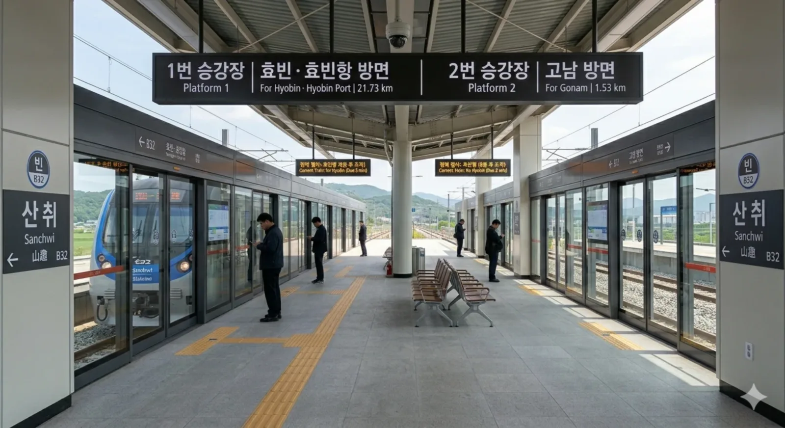
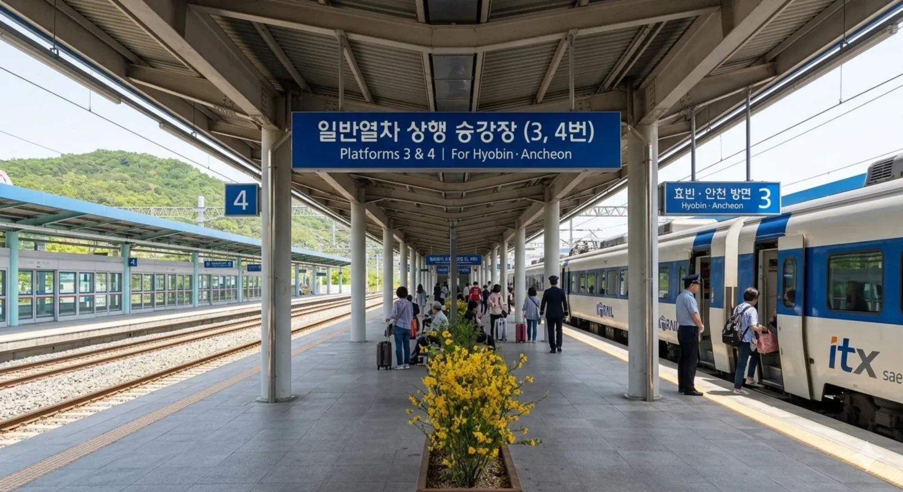
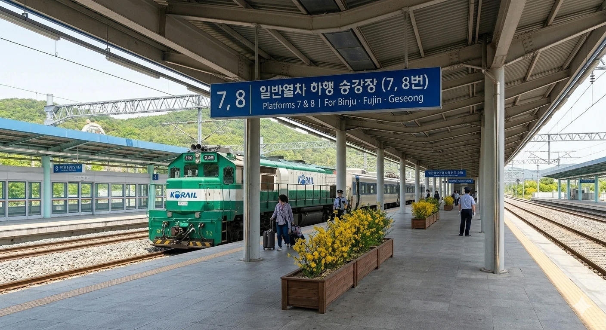

덕빈북도 천주시 궁하구 산취읍 사야리 519에 위치한 철도역이다. 빈빈효선 광역전철 B32이다.
1924년 개업 이래 지역의 터줏대감 역할을 해온 역이다. 현재 역사는 2017년 광역전철 개통과 함께 지어진 지상 2층 규모의 역사다. KTX를 포함한 각종 일반열차가 정차하며 천주시 외곽 교통의 핵심 거점이다. 단, KTX는 일 1회만 정차하므로 시간표 확인이 필수다.
산취읍 소재지에 위치하여 주변에 논밭과 나즈막한 산들이 펼쳐져 있다. 읍내 중심상권과 가까워 유동인구가 꾸준하다.
| 산취역 출구 정보 | ||
|---|---|---|
| 번호 | 주요 시설 및 방향 | 비고 |
| 1 | 산취읍행정복지센터, 산취우체국 | |
| 2 | 사야리마을회관, 황매화군락지 | |
| 연도 | 총 이용객 | 비고 |
|---|---|---|
| 2021년 | 4,878명 | |
| 2022년 | 5,569명 | |
| 2023년 | 5,625명 | |
| 2024년 | 5,682명 | 안정적인 수요 유지 |
전철용 상대식 승강장(1, 2번)과 일반열차용 섬식 승강장(3~8번)이 혼재되어 있는 4면 8선 구조이다.

| 시곡 ↑ | |||
1 |
ㅣ | ㅣ | 2 |
| ↓ 대뢰 | |||
| 1 | 빈 빈효선 광역전철 | 효빈 · 효빈항 방면 | |
| 2 | 빈 빈효선 광역전철 | 고남 방면 | |

| 궁하 · 과림 ↑ | ||
| ㅣ | 3 | 4 |
ㅣ |
| ↓ 천주 | ||
| 3 · 4 | 일반열차 일반열차 (상행) | 효빈 · 안천 방면 |
| ㅣ | 5 | 6 |
ㅣ |

| 화소 ↑ | ||
| ㅣ | 7 | 8 |
ㅣ |
| ↓ 천주 | ||
| 7 · 8 | 일반열차 일반열차 (하행) | 빈주 · 부진 · 계성 방면 |
산취역은 천주시 외곽 교통의 핵심 요지로, 농어촌버스뿐만 아니라 천주시내 도심으로 향하는 다양한 광역/간선 버스 노선들이 정차하여 환승객이 매우 많다.
산취역에서 천주시내 주요 도심 및 인접 지역으로 빠르게 이어주는 핵심 쾌속 노선들이다.
| 노선 번호 | 주요 경유지 | 비고 |
|---|---|---|
| 1100 | 천주터미널 ↔ 산취역 ↔ 대뢰역 ↔ 안천시 | 직행 좌석 |
| 2200 | 산취역(기점) ↔ 궁하구청 ↔ 천주시청 ↔ 마현지구 | 도심 순환 |
천주시내 주요 거점을 촘촘하게 잇는 파란색 일반 간선버스 노선들이다.
| 노선 번호 | 주요 경유지 |
|---|---|
| 110 | 천주역 ↔ 궁하구청 ↔ 산취역 ↔ 사야리 ↔ 시곡역 |
| 135 | 산취역(기점) ↔ 산취중 ↔ 대뢰동 ↔ 천주역 |
산취읍 주변의 외곽 마을과 산간 지역을 연결하는 초록색 노선들이다.
| 노선 번호 | 주요 경유지 |
|---|---|
| 310 | 산취역(기점) ↔ 사야리마을회관 ↔ 궁하동 ↔ 과림 |
| 340 | 시곡역 ↔ 산취역 ↔ 산취읍사무소 ↔ 대뢰역 |
| 55 | 산취역(기점) ↔ 산취빵집거리 ↔ 황매화군락지 ↔ 천주 외곽 |
| 노선 번호 | 주요 경유지 |
|---|---|
| 천주-1 | 산취읍행정복지센터 ↔ 산취역 ↔ 사야2리 |